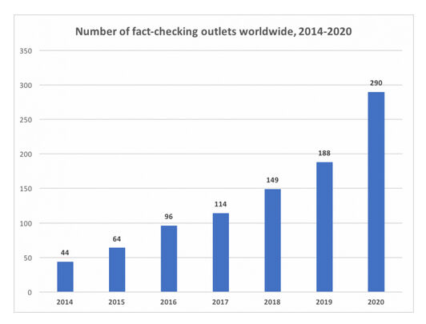
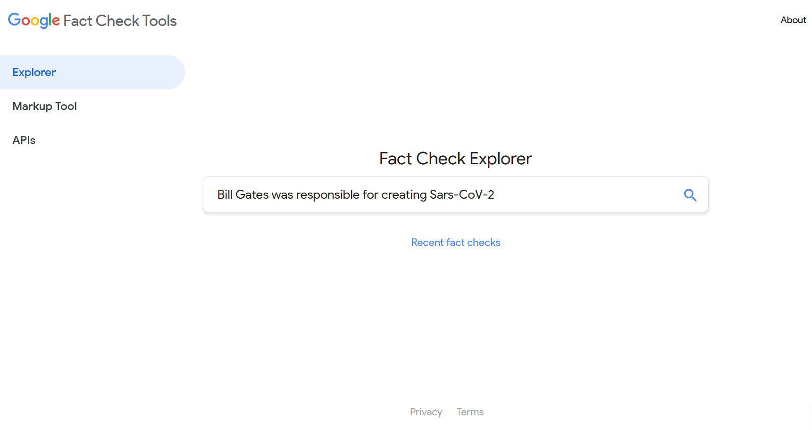
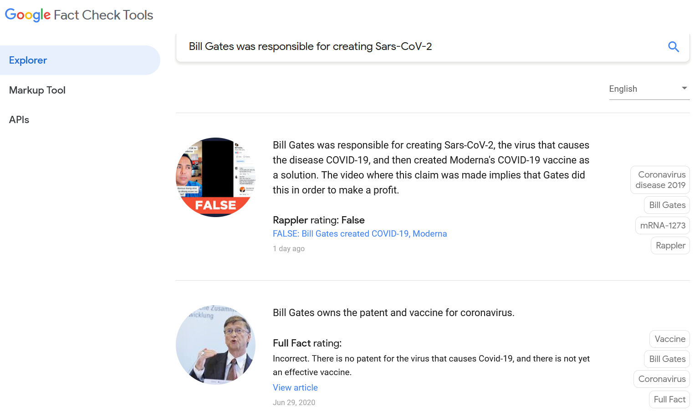
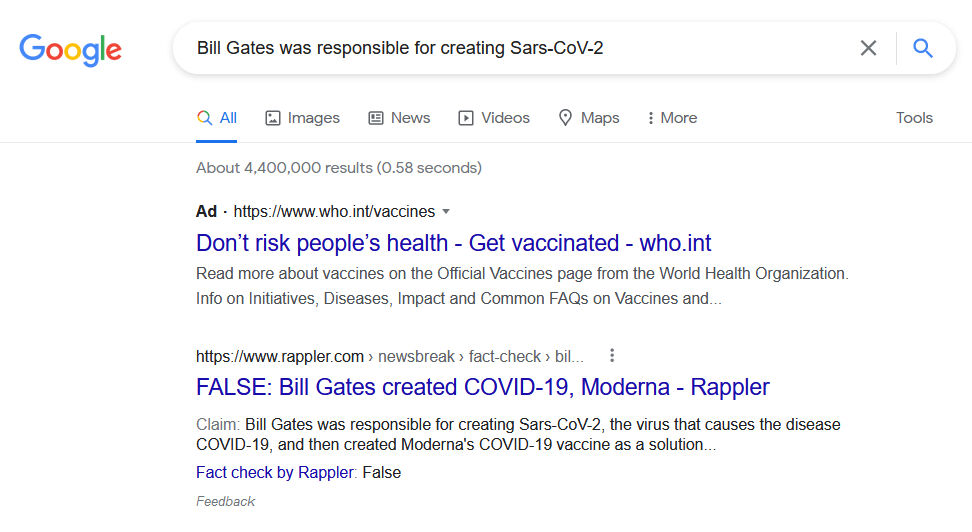
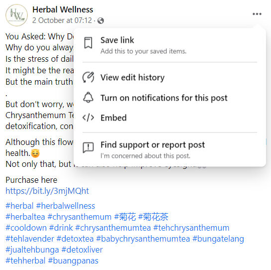
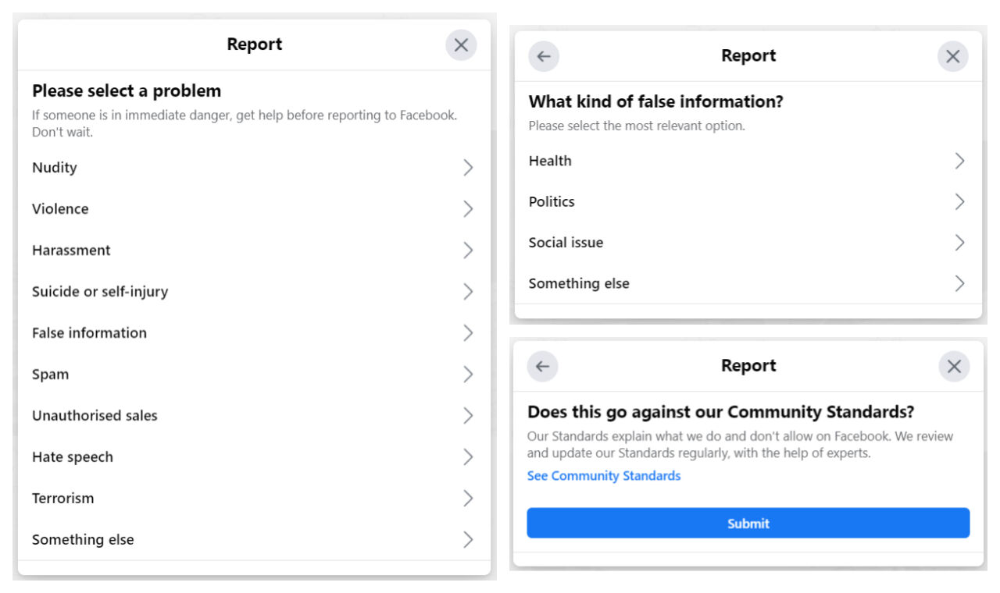
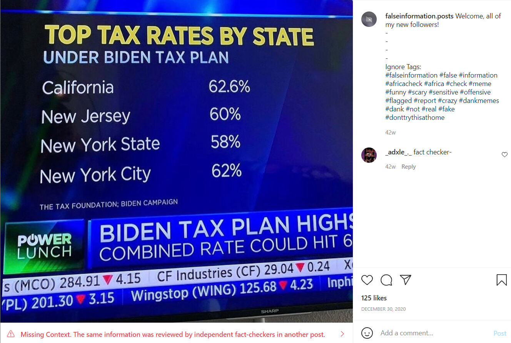
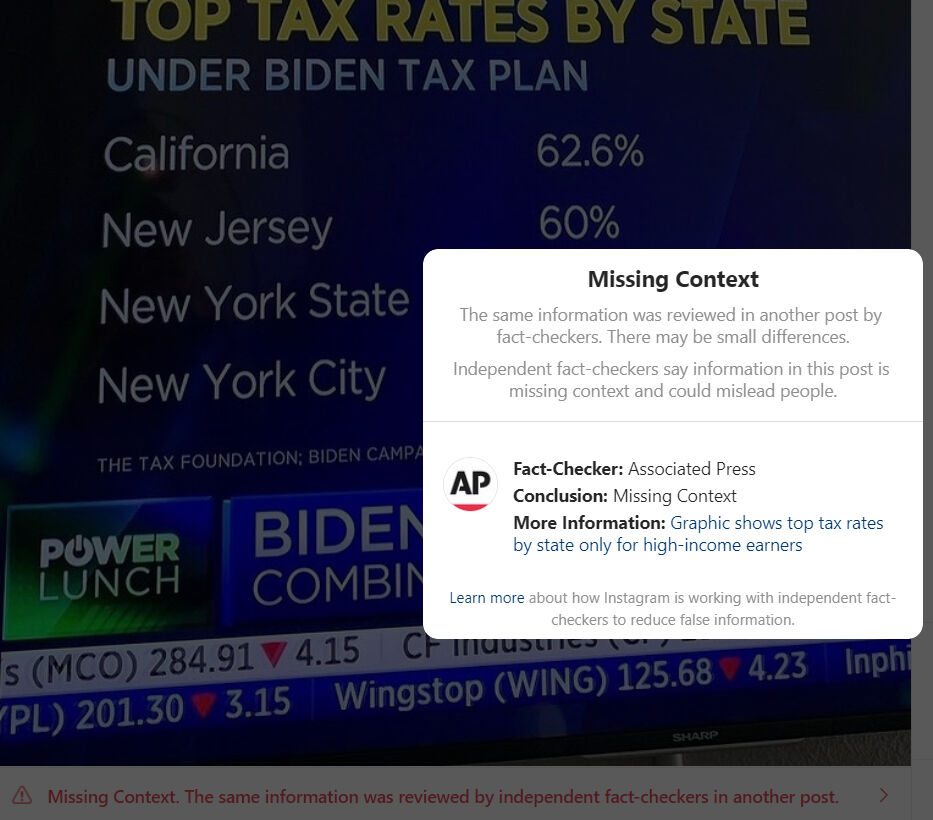
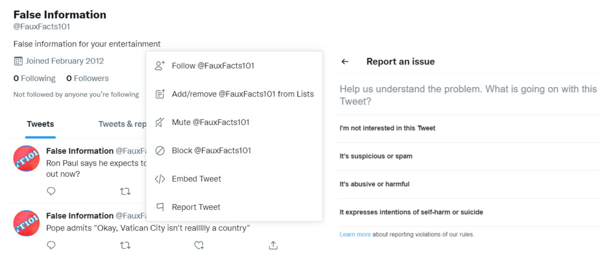
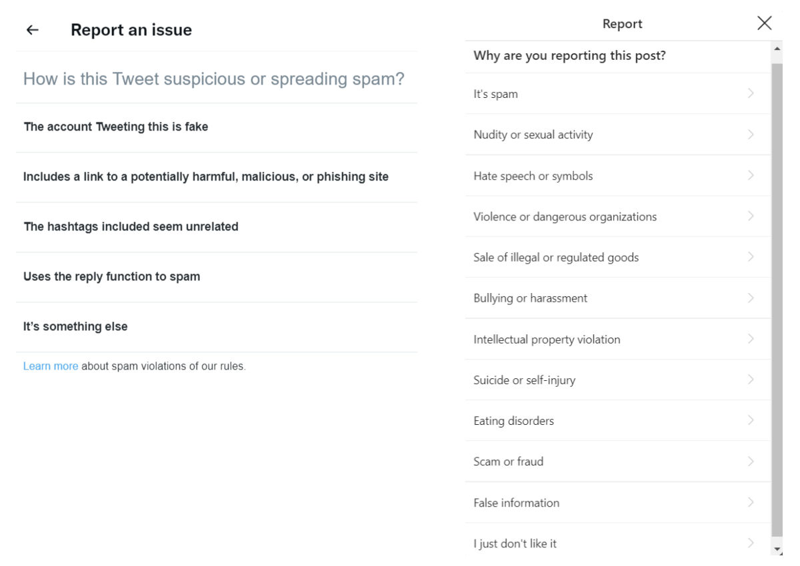

За полазнике
За тренере
За полазнике
За тренере
Модул 17: Платформе и услуге за проверу чињеница
Опис модула
Главни циљ овог модула је да објасни платформе за проверу чињеница, њиховo функционисање и услуге провере чињеница.
Секундарни циљ је да усмери тренере који желе да користе садржај овог модула за обуку полазника.
Уз ове циљеве, представљене су платформе и услуге за проверу чињеница, заједно са смерницама о томе како да се предмет предаје.
Полазници који успешно заврше овај модул моћи ће да:
- идентификују проверу чињеница и фектчекера (енг. fact-checker – особа која проверава чињенице)
- разумеју платформе за проверу чињеница и њихов рад
- разумеју Међународну мрежу фектчекера (енг. International Fact-Checking Network - IFCN)
- разумеју “Кодекс понашања” Међународне мреже фектчекера
- разумеју корпорације које се баве провером чињеница
- разумеју аутоматизовану проверу чињеница
Поред тога, тренери који успешно заврше овај модул, моћи ће са већим разумевањем да подучавају о платформама за проверу чињеница, њиховoм раду и услугама провере чињеница.
Структура модула
Овај модул се састоји из следећих целина:
- Циљ, опис садржаја и исходи учења
- Структурa модула
- Смернице за полазнике
- Смернице за тренере (како се припремити, методе које треба користити и савети за тренере)
- Садржај (материјал за учење и вежбање)
- Квиз
- Референце (литература и препоручени извори)
Главни циљеви модула, опис садржаја и исходи учења објашњени су у делу Опис модула. Смернице за полазнике укључују упутства и сугестије за полазнике. Смернице за тренере воде тренере кроз различите фазе обуке и дају савете који би могли да буду корисни током предавања предмета. Садржај обухвата све материјале за учење и вежбе везане за садржај. Квиз укључује питања са вишеструким избором и питања на која се одговара са тачно или нетачно како би полазници тестирали свој напредак. Одељак Референце обухвата списак извора цитираних у садржају модула и листу додатних извора и видео-записа који се препоручују за читање и гледање како би се проширило знање о овој теми.
Смернице за полазнике
Од полазника се очекује да прочитају текст, погледају препоручене видео-записе и ураде вежбања. Они могу да консултују предложене ресурсе за додатне информације. Након проучавања садржаја, полазницима се препоручује да ураде квиз како би проценили свој напредак. Уколико је потребно, могу поново проучити материјал за учење.
Смернице за тренере
Смернице за тренере укључују сугестије и савете о томе како да користе садржај овог модула за обуку полазника.
Припрема
Припремите презентацију (Пауерпоинт/Прези/Канва) која је обогаћена визуелним материјалима (слике и видео-записи) и јасним примерима. Примере и вежбања у овом модулу прилагодите темама којe су познатије конкретној циљној групи. Одабир локалних примера (специфичних за земљу) у вези са актуелним или добро познатим питањима помаже да се суштина јасније илуструје и додатно привуче пажња полазницима. Што су примери познатији и популарнији, то ће порука бити боље пренета.
Почетак
Како бисте увели полазнике у тему, на почетку можете користити кратак квиз (3 до 5 питања) направљен у Кахуту или им поставити питања путем Ментиметар апликације. Поменути квиз и питалице се могу користити као мотивационо средство и средство за проверу постојећег знања полазника о овој теми. Питања, на пример, могу бити: Шта је провера чињеница? Да ли сте чули за Међународну мрежу фектчекера (IFCN - International Fact-Checking Network)?
Методологија
Током обуке могу се комбиновати различите наставне методе:
- Предавања
- Дискусије
- Рад у групама
- Самопроцењивање
Савети за тренере
Загревање
Ефикасан начин укључивања полазника и утврђивања заједничких очекивања о томе шта ће научити јесте постављање неколико прелиминарних питања о овој теми. Ово се може урадити кроз групни рад, тако што ћете замолити полазнике да дискутују и прикупе идеје, или кроз индивидуални рад, тако што ћете замолити сваког полазника да напише своје идеје на самолепљивим папирићима. Активност се може спровести на следећи начин:
- Питајте полазнике
- да ли знају назив неке платформе за проверу чињеница
- да ли су раније слали било какав сумњив садржај некој платформи за проверу чињеница
- да ли су претходно прочитали анализу коју је припремила нека платформа за проверу чињеница
- да ли пријављују неки садржај на Фејсбуку, Инстаграму или Твитеру као сумњив садржај
Представљање циља лекције
Циљ лекције треба да буде јасан (шта су платформе за проверу чињеница, њихов рад и услуге провере чињеница). Након питања за загревање, лакше ћете разјаснити циљеве.
Представљање садржаја лекције
Приликом представљања садржаја, водите рачуна о интеракцији са полазницима и подстакните их на активно учешће.
- Приликом објашњавања предмета, укључитe примере из свакодневног живота.
- Уколико у вашој земљи постоји платформа за проверу чињеница, могу се приказати примери њихове анализе. Такође, на часу можете испитати да ли су информације о методологији, финансирању, радном тиму ових платформи јасно истакнуте на веб-сајту. Ако постоје недостаци у информацијама на веб-сајту, о њима можете дискутивати на часу.
- Такође, током курса се могу користити и локални и међународни примери, што ће помоћи полазницима да усвоје предмет.
Закључак
Направите кратак резиме лекције и поставите неколико питања која ће помоћи да истакнете најважније поруке које желите да пренесете.
Следеће питање може помоћи:
- Питајте полазнике који су критеријуми наведени у “Кодексу понашања” за оне који желе да постану потписници Међународне мреже фектчекера?
Када долазите до закључка, побрините се да полазници разумеју начин рада и услуге платформи за проверу чињеница.
Садржај: Платформе и услуге за проверу чињеница
Увод
Значење концепата као што су верификација и провера чињеница и разлике између ових концепата су разматране у Модулу 16. Међутим, пре него што пређемо на платформе за проверу чињеница и услуге које су предмет овог модула, корисно је запамтити дефиниција провере чињеница.
Провера чињеница (тзв. фектчекинг) је дефинисана у Модулу 16 као процес који се одвија након објављивања и упоређује јавно објављену тврдњу са поузданим и аутентичним изворима. Такође се фокусира на логику, кохерентност и контекст тврдње (Mantzarlis, 2015). Особа која проверава чињенице и бави се овим послом назива се и фектчекер (енг. fact-checker). Такође, свако са знањем и вештинама провере чињеница има потенцијал да буде фектчекер. Рад фектчекера је без пристрасности, лобирања и реторике. Штавише, они траже проверљиве чињенице (Elizabeth, 2014).
Главни циљ фектчекера и платформи за проверу чињеница је повећање знања истраживањем и поновним извештавањем о наводним чињеницама у објавама/изјавама политичара или било кога чије речи/објаве утичу на животе других. Осим тога, провера чињеница треба да има за циљ да грађанима пружи чињеничне, јасне и помно проверене информације које ће им омогућити да донесу информисане изборе приликом гласања или других важних одлука (Elizabeth, 2014). Провера чињеница се заснива на упућивању на ауторитет. Ауторитет овде су извори, а не проверачи чињеница. (Mantzarlis, Funke & Benkelman, 2019).
Платформе за проверу чињеница
Наводи се да почеци сајтова за проверу чињеница у Сједињеним Државама, који су били домаћини првих примера верификације, датирају још из 1980-их година и све већег интензитета политичких односа са јавношћу током председавања Роналда Регана (Dobbs, 2012, стр. 1; Lowrey, 2017, стр. 377). Како је популарност интернета расла касних 1990-их, бројни политички оријентисани блогови, често са идеолошким склоностима, почели су да проверавају чињенице о политичким кандидатима и главним новинским кућама (Lowrey, 2017, стр. 377). Порекло сајтова за верификацију такође сеже до веб-сајта Snopes и сличних веб-сајтова који су се појавили 90-их и разоткрили преваре. Ови сајтови су почели да истражују политичке тврдње као и многа друга питања (Fader, 2012; Lowrey, 2017, стр. 377).
С друге стране, 2000-те су биле сведоци успона платформи које се могу назвати независним политичким алатима за проверу чињеница и њиховог брзог ширења широм света. Политички избори последњих година обезбедили су плодно тло за појаву и раст платформи за проверу чињеница, једног од бројних нових облика и пракси новинарства у дигиталном добу (Graves & Cherubini, n.d., стр. 6; Lowrey, 2017, стр. 376). Творци политике и фондације виде проверу чињеница као ефикасно средство у борби против дезинформација на мрежи (Mantzarlis, Funke & Benkelman, 2019). Прве платформе посвећене процени истинитости политичких тврдњи појавиле су се у Сједињеним Државама почетком 2000-их (Graves & Cherubini, n.d., стр. 6). Организације Factcheck.org (2003), PolitiFact (2007) су биле међу првима које су почеле да раде као немедијске, независне платформе за верификацију. Према последњем извештају организације Duke Reporters' Lab (Stencel & Luther, 2021), постоји укупно 341 активан пројекат који се бави провером чињеница у приближно 102 земље од јуна 2021. У јуну 2020. године овај број је износио 290 (Stencel & Luther, 2020).

Извор: Duke Reporters’ Lab
Спроведене су различите студије о ефектима провере чињеница током времена и изнета су различита мишљења (Lim, 2018, стр. 1). Поједине студије су показале да ће провера чињеница одвратити политичаре од промовисања лажних или обмањујућих тврдњи и да им може послужити као свеобухватан/доследан алат за праћење (Nyhan ve Reifler, 2015, стр. 2, 19-20). Друге групе студија су тврдиле да провера чињеница има мали утицај на промену понашања политичара, изражавајући да политичари често игноришу критике оних који проверавају чињенице и чак их сматрају политички пристрасним (Froomkin, 2012; Gottfried, Hardy, Winneg & Jamieson, 2013; Waldman, 2015).
Циљ свих различитих платформи за проверу чињеница је промовисање истине у јавном дискурсу. Међутим, када је у питању контрола политичке стварности, ово може покренути дискусије. Чак и једноставна чињенична питања могу довести до неслагања, а фектчекери су често изложени негативним критикама оних који се не слажу са њиховим одлукама (Graves & Cherubini, n.d., стр. 6). Међутим, поједини истраживачи (Ostermeier, 2011; Uscinski & Butler, 2013, стр. 162-163; Uscinski, 2015), су изјавили да су платформе за проверу чињеница или мултилатералне или да имају неколико недостатака (посебно методолошких) за грађане који траже истину.
Да би се ојачало поверење у платформе и услуге провере чињеница, препоручује се да платформе за проверу чињеница раде на повећању транспарентности о својим услужним процесима и изворима финансирања (Brandtzaeg & Følstad, 2017, стр. 65). Као резултат критика платформи и услуга провере чињеница, с времена на време се поставља питање: “Ко проверава фектчекере?” Појединци представљају најважнију публику за потврду фектчекера. Појединци могу да провере да ли платформе за проверу чињеница деле своје методологије и финансијске ресурсе. Истовремено, сваки појединац може да контролише кораке верификације стицањем знања и вештина верификације. Друга важна организација која обезбеђује да се платформе за проверу чињеница процењују у погледу транспарентности, непристрасности (објективности) и да делују у складу са одређеним стандардима је Међународна мрежа фектчекера (IFCN - International Fact-Checking Network, 2020).
Међународна мрежа фектчекера
Међународна мрежа фектчекера (енг. International Fact-Checking Network - IFCN) покренута је 2015. године у оквиру Поинтеровог института који се бави едукацијом новинара и разним истраживачким активностима. Ова Мрежа је имала за циљ да окупи растућу заједницу фектчекера широм света и заговорника информисања заснованог на чињеницама у глобалној борби против мисинформација. Тим Мреже прати трендове у области провере чињеница како би обезбедио ресурсе фектчекерима, допринео јавном дискурсу и пружио подршку новим пројектима/иницијативама који унапређују одговорност у новинарству (International Fact-Checking Network, 2021).
Међународна мрежа фектчекера је креирала и објавила „Кодекс понашања“ као резултат размене идеја са фектчекерима из различитих делова света. Ови принципи су намењени организацијама које редовно објављују непристрасне извештаје о тачности изјава јавних личности и водећих организација, као и других широко распрострањених тврдњи о питањима од јавног интереса (“IFCN Code of Principles”, 2021a).
Критеријуми који су потребни да би платформа за проверу чињеница постала потписница Међународне мреже фектчекера су (“IFCN Code of Principles”, 2021a):
- Посвећеност непристрасности и правичности: Организације потписнице користе исти стандард приликом сваке провере чињеница и провере сваке тврдње, пратећи исти процес. Оне се не фокусирају да проверавају тачност ни за једну страну. Оне зависе од доказа да би утврдили исход. Оне не заговарају нити заузимају политички став о питањима у којима проверавају чињенице.
- Посвећеност стандардима и транспарентности извора: Организације потписнице желе да њихови читаоци могу сами да провере налазе. Детаљно пружају све изворе тако да читаоци могу да копирају њихов рад (осим у случајевима када лична безбедност извора може бити угрожена).
- Посвећеност транспарентности финансирања и организације: Организације потписнице су транспарентне у погледу својих извора финансирања. Када прихвате финансирање од других организација, осигуравају да финансијери немају утицаја на закључке који се налазе у извештајма фектчекера. Организације потписнице такође детаљно наводе професионално искуство свих кључних личности у организацији, јасно наводе организациону структуру и правни статус и пружају информације преко којих читаоци могу лако да ступе у контакт.
- Посвећеност стандардима и транспарентности методологије: Потписници описују методологију коју користе за одабир, истраживање, писање, уређивање, објављивање и исправку приликом провере чињеница. Они такође подстичу своје читаоце да поднесу тврдње за које је потребна провера чињеница. Они су транспарентни о томе зашто и како врше проверу чињеница.
- Посвећеност отвореној и поштеној политици исправки: Потписници објављују политике исправки и пажљиво их прате. Поступајући у складу са њима, они спроводе процес корекције на отворен и транспарентан начин. Истовремено, покушавају да натерају читаоце да виде и исправљену верзију.
Постоји укупно 31 детаљан критеријум који се очекује да потписници испуне у вези са сваком од наведених ставки. Аплликације оцењују независни оцењивачи у погледу усклађености са овим критеријума. Њихове процене такође прегледа саветодавни одбор Међународне мрежа фектчекера како би се обезбедила правичност и доследност у целој Мрежи (“IFCN Code of Principles”, 2021a). Одобрења имају одређени рок важења. Када овај период истекне, од платформи за проверу чињеница се тражи да ажурирају своје потребне изјаве, оне се такође процењују и одговарајуће се поново одобравају. Од октобра 2021. широм света, има укупно 88 одобрених и активних потписника Међународне мрежа фектчекера (“IFCN Code of Principles”, 2021b).
Могу постојати разлике између платформи за проверу чињеница које одражавају само културне или националне разлике. Неке од њих могу бити повезане са новинама, док су друге повезане са универзитетима или различитим невладиним организацијама. Осим тога, финансијска питања представљају велики проблем за многе. Међутим, надамо се да ће поштовање “Кодекса понашања” помоћи да се осигурају квалитет, доследност и транспарентност, као и одговорност са циљем да се да промовише квалитетно извештавање (Kessler, 2016).
Успостављање сарадњи у процесу провере чињеница
Док је процес провере чињеница главна мисија платформи за проверу чињеница, он може бити део уређивачког процеса других новинских организација. Приликом припреме било које вести за објављивање, фаза у којој се врше коначне исправке је обично фаза уређивачке контроле. Према томе, последња фаза је фаза уређивачке контроле како би се осигурало да су наводи у вестима истражени и да су сви недостаци/грешке исправљене. У супротном, занемарене грешке могу угрозити кредибилитет и новинара и организацију са којом је повезан (Blatchford, 2021).
Са широко распрострањеном употребом манипулација и лажи у изјавама политичара и стручњака, разне новинске организације као што су Вашингтон Пост, Ројтерс, Асошиејтед прес, Би-Би-Си, Си-Ен-Ен су укључиле одељења за проверу чињеница у своје институционалне структуре (Ceci & Williams, 2020). Значајан број ових одељења (на пример, Вашингтон Пост, Ројтерс, Асошиејтед прес, Би-Би-Си, Си-Ен-Ен) деле своје анализе провере чињеница са читаоцима на веб-сајтовима релевантних новинских организација.
Поред новинских организација, поједине платформе друштвених мрежа као што су Фејсбук, Инстаграм, Твитер, Тик-ток и Гугл су такође започеле сарадњу са платформама за проверу чињеница. Постоје две основне алатке за проверу чињеница које Гугл укључује. То су Fact Check Explorer и Fact Check Markup Tool. Оба алата имају за циљ да олакшају рад фектчекерима, новинарима и истраживачима (Google fact check tools, n.d.).
Fact Check Explorer: Овај алат вам помаже да претражујете да ли је нека тема проверена на различитим платформама за проверу чињеница, и ако јесте, да приступите релевантној аналитици. Такође је могуће претраживати и различите платформе за проверу чињеница или имена особе. Аналитика провере чињеница ће се појавити у Fact Check Explorer-у ако испуњава смернице за приказивање у Гугл претрази или Јутјубу (Google fact check tools, n.d.).
На пример, хајде да проверимо да ли је анализа тврдње “Бил Гејтс је одговоран за стварање Сарс-ЦоВ-2” објављена.

Извор: Потраживање тврдње “Bill Gates was responsible for creating Sars-CoV-2” на Fact Check Explorer-у

Преко Fact Check Explorer-а смо приступили анализама које су објавиле платформе као што су Rappler и Full Fact и установили да је тврдња “Bill Gates was responsible for creating Sars-CoV-2” лажна.
Fact Check Markup Tool: Уколико имате веб-страницу која прегледа тврдње које су поднели други (попут платформи за проверу чињеница), можете да укључите ClaimReview структуриране податке на своју веб-страницу. Дакле, ClaimReview структурирани подаци могу да обезбеде да се сажета верзија ваше провере чињеница прикаже у резултатима Гугл претраге када се ваша страница појави у резултатима претраге за ту тврдњу (Google fact check tools, n.d.)
На пример, хајде да видимо да ли се провере чињеница у вези са тврдњом “Bill Gates was responsible for creating Sars-CoV-2” појављују међу резултатима претраге коју смо за ову тврдњу урадили у Гугл претрази.

Извор: Резултати Гугл претраге за тврдњу “Bill Gates was responsible for creating Sars-CoV-2”
Чини се да се провера чињеница, коју је објавио веб-сајт Rappler у вези са нетачним тврдњама, налази међу резултатима Гугл претраге.
Међу платформама друштвених мрежа, Фејсбук је почео да ради са независним фектчекерима (као што су Full Fact, PolitiFact, Teyit) који су сертификовани преко неутралне Међународне мреже фектчекера да идентификују, прегледају и оцењују потенцијалне мисинформације на Фејсбуку, Инстаграму и Вотсапу, који раде под истим окриљем. У том контексту, од 2016. године у току је проширивање програма провере чињеница како би укључио више од 80 организација које проверавају чињенице на више од 60 језика широм света. Фокус програма је на решавању виралних мисинформација (посебно лажних тврдњи које могу да се докажу и које могу да доведу у заблуду или нанесу штету) (Facebook Journalism Project, 2021).
Када сарадничке платформе за проверу чињеница открију лажан/измењен/делимично лажан/ недостатак контекста, на платформи се примењују одређене операције (Фејсбук и Инстаграм) које се односе на тај садржај (Facebook Journalism Project, 2021):
- Смањена дистрибуција: На Фејсбуку се тај садржај приказује ниже у фиду вести и његова дистрибуција је смањена. На Инстаграму се тај садржај уклања са хештегова и страница за откривање.
- Упозорење о дељењу: Када корисници покушају да поделе овај садржај, статус о том садржају се саопштава кориснику у виду искачућег обавештења.
- Обавештења о дељењу: Корисници који су раније делили садржај такође се обавештавају да постоји додатно извештавање о статусу садржаја.
- Ознаке мисинформација: Јасна и визуелна ознака се примењује на садржај који је разоткривен од стране платформи за проверу чињеница, додајући линкове до сродне аналитике платформе за проверу чињеница.
- Уклањање подстицаја за поновљене преступнике: Њихова укупна дистрибуција је смањена када странице, групе, налози или веб-сајтови стално деле садржај који је разоткривен од стране сарадничких платформи за проверу чињеница. Поред тога, они губе могућност да се оглашавају или монетизују у одређеном временском периоду.
Као корисник Фејсбука, могуће је пријавити садржај који сматрате сумњивим или пријавити да садржи лажне информације.

Извор: Објава на Фејсбуку

Извор: Пријава објаве на Фејсбуку
На сличан начин се подносе приговори и на Инстаграму. Платформе трећих лица за проверу чињеница које раде у сарадњи са платформом друштвених мрежа прегледају садржај и испитују објаве са сумњивим садржајем. Када се утврди да објава садржи лажне информације, њој се придодаје изјава у којој се наводи да садржи лажне информације, како би корисници били упознати са тим.

Извор: Пост на Инстаграму који садржи нетачан контекст

Извор: “Missing context” (Нетачан контекст) упозорење на објави на Инстаграму
Твитер је такође објавио да је покренуо пилот апликацију под називом Birdwatch и изјавио да ће се борити против обмањујућих информација. Помоћу ове апликације, корисници ће имати опцију да пишу белешке које пружају додатне информације о твитовима за које сматрају да садрже обмањујуће информације. За сада, само појединци у САД могу да виде садржај на сајту Birdwatch и додате напомене о погрешним информацијама (Twitter help center, n.d.).
Корисници такође могу пријавити сумњив садржај и на Твитеру, баш као и на Фејсбуку и Инстаграму.

Извор: Пријављивање објаве на Твитеру

Оправдавајући пораст и брзо ширење мисинформација о здрављу везано за Ковид-19 пандемију, Тик-ток платформа је такође објавила да је одлучила да сарађује са независним платформама за проверу чињеница у борби против мисинформација (TikTok, 2021).
Аутоматска провера чињеница (енг. Automated Fact-Checking)
С обзиром на брзину којом се дезинформације шире у дигитслном окружењу, важно је да фектчекери имају алате који им помажу да анализирају токове података и брзо реагују на обмањујуће тврдње када се појаве. Иако аутоматизација још увек није у позицији да у потпуности покрије процес од почетка до краја, она може помоћи фектчекерима у различитим фазама процеса провере чињеница (Sittmann & Tompkins, 2020). Аутоматизација се може користити као фасилитатор да би се ојачали механизми потврде (Full Fact, n.d.):
- Свакодневно праћење и утврђивање најважнијих догађаја тог дана до провере чињеница
- Понављају се ситуације у којима се информације за које је претходно утврђено да су нетачне
- Помно праћење садржаја уз контролу у реалном времену
На пример, када идентификују обмањујуће тврдње о политичким догађајима који се дешавају уживо, фектчекери могу да користе софтвер да би конвертовали аудио информације у текстуални формат који се лакше обрађује машинама (као што ради систем Squash који је развио Duke Reporters’ Lab) или да примају телевизијске титлове (као што то ради систем Live који је развио Full Fact’). Тада на сцену ступају технике обраде природног језика, а софтвер који означава реченице (као што је ClaimBuster) може се користити да истакне тврдње и онемогући небитне изјавe. Поред ових, софтвер као што је ClaimReview може се користити за филтрирање претходно испитаних тврдњи упоређивањем излаза са базама података претходних истраживања. Аутоматизација такође може помоћи у ширењу аналитике провере чињеница. На пример, Chequeabot може да припреми постове на друштвеним мрежама за уредника на аргентинској платформи за проверу чињеница Chequeado да их прегледа и затим објави (Adair, 2021; Sittmann & Tompkins, 2020).
Као што је раније поменуто у Модулу 16 (види Модул 16), аутоматизација не пружа стопроцентну успешност када је у питању провера садржаја који генерише корисник. Због тога је комбинација традиционалних новинарских техника и аутоматизације идеална у процесу провере чињеница (Wardle, n.d., стр. 27).
Квиз
Референце
Adair, B. (2021, June 28). The lessons of Squash, our groundbreaking automated fact-checking platform. Duke Reporters’ Lab.
Blatchford, T. (2021, October 13). ‘The fact-checking process can help you sleep better at night’: Tips from PolitiFact on bulletproofing your stories. Poynter.
Brandtzaeg, P. B. & Følstad, A. (2017). Trust and distrust in online fact-checking services. Communications of the ACM, 60(9), 65-71. doi: https://doi.org/10.1145/3122803
Ceci, S. J. & Williams, W. M. (2020, October 25). The psychology of fact-checking. Scientific American.
Dobbs, M. (2012, February). The Rise of political fact-checking: How Reagan inspired a journalistic movement: A reporter’s eye view. New America Foundation.
Elizabeth, J. (2014, May 20). Who are you calling a fact checker? American Press Institute.
Facebook Journalism Project. (2021). How Facebook’s third-party fact-checking program works.
Fader, C. (2012, September 28). Fact check: So who’s checking the fact-finders? We are. Jacksonville.com
Froomkin, D. (2013, February 6). How the mainstream press bungled the single biggest story of the 2012 campaign. Huffington Post.
Full Fact. (n.d.). About us: Automated fact checking.
Google fact check tools. (n.d.). About.
Gottfried, J. A., Hardy, B. W., Winneg, K. M. & Jamieson, K. H. (2013). Did fact checking matter in the 2012 Presidential campaign? American Behavioral Scientist, 57(11), 1558-1567.
Graves, L. & Cherubini, F. (n.d.). The rise of fact-checking sites in Europe. Reuters Institute for the Study of Journalism.
IFCN Code of Principles. (2021a). The commitments of the code of principles.
IFCN Code of Principles. (2021b). Verified signatories of the IFCN code of principles.
International Fact-Checking Network. (2021). Poynter.
International Fact-Checking Network. (2020, March 4). Code of principles [Video].
Kessler, (2016, September, 15). Fact-checking organizations around the globe embrace code of principles. The Washington Post.
Lim, C. (2018). Checking how fact-checkers check. Research and Politics, July-September, 1-7. doi: 10.1177/2053168018786848
Lowrey, W. (2017). The emergence and development of news fact-checking sites. Journalism Studies, 18(3), 376-394.
Mantzarlis, A. (2015, October 21). Will verification kill fact-checking?. In Poynter.
Mantzarlis, A., Funke, D. & Benkelman, S. (2019, February 14). How fact-checking has changed since 2015. Poynter.
Nyhan, B. & Reifler, J. (2014). The effect of factchecking on elites: A field experiment on U.S. state legislators. American Journal of Political Science, 59(3), 628-640.
Ostermeier, E. (2011, February 10). Selection bias? PolitiFact rates republican statements as false at 3 times the rate of democrats. Smart Politics.
Sittmann, J. & Tompkins, A. (2020, July 17). The strengths and weaknesses of automated fact-checking tools. DW Akedemie.
Stencel, M. & Luther, J. (2021, June 2). Fact-checking census shows slower growth. Duke Researchers’ Lab.
Stencel, M. & Luther, J. (2020, June 22). Annual census finds nearly 300 fact-checking projects around the world.Duke Researchers’ Lab.
Tiktok. (2021). COVID-19.
Twitter help center. (n.d.). About.
Uscinski, J. E. (2015). The epistemology of fact checking (is still naìve): Rejoinder to Amazeen. Critical Review, 27(2), 243-252.
Uscinski, J. E. & Butler, R. W. (2013). The epistemology of fact checking. Critical Review, 25(2), 162-180. doi: 10.1080/08913811.2013.843872
Waldman, P. (2015, December 1). Why Donald Trump is impervious to fact-checking. The Week.
Wardle, C. (n.d.). Verifying user-generated content. In C. Silverman (Ed.), Verification handbook: An ultimate guideline on digital age sourcing for emergency coverage (p. 25-32).
Препоручени извори
Africa Check, Chequeado & Full Fact. (2019, June 20). Fact checking doesn’t work (the way you think it does). Full Fact Blog.
Bell, E. (2019, Fall). The fact-check industry. Columbia Journalism Review.
Hepworth, S. (2017, March 8). The New Yorker’s chief fact-checker on how to get things right in the era of ‘post-truth’. Columbia Journalism Review.
Jackson, J. (2017, January 12). BBC sets up team to debunk fake news. The Guardian.
Kelly, J. (2021, February 18). How ‘fact-checking’ can be used as censorship. Financial Times.
Tamkin, E. (2019, September, 11). CNN public editor: Daniel Dale’s fact-checking mission checks out. Columbia Journalism Review.